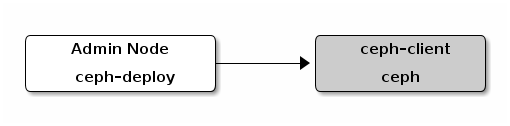

Block Device Quick Start¶
To use this guide, you must have executed the procedures in the Storage Cluster Quick Start guide first. Ensure your Ceph Storage Cluster is in an active + clean state before working with the Ceph Block Device.

You may use a virtual machine for your ceph-client node, but do not execute the following procedures on the same physical node as your Ceph Storage Cluster nodes (unless you use a VM). See FAQ for details.
Install Ceph¶
Verify that you have an appropriate version of the Linux kernel. See OS Recommendations for details.
lsb_release -a uname -r
On the admin node, use ceph-deploy to install Ceph on your ceph-client node.
ceph-deploy install ceph-client
On the admin node, use ceph-deploy to copy the Ceph configuration file and the ceph.client.admin.keyring to the ceph-client.
ceph-deploy admin ceph-client
The ceph-deploy utility copies the keyring to the /etc/ceph directory. Ensure that the keyring file has appropriate read permissions (e.g., sudo chmod +r /etc/ceph/ceph.client.admin.keyring).
Configure a Block Device¶
On the ceph-client node, create a block device image.
rbd create foo --size 4096 [-m {mon-IP}] [-k /path/to/ceph.client.admin.keyring]On the ceph-client node, map the image to a block device.
sudo rbd map foo --pool rbd --name client.admin [-m {mon-IP}] [-k /path/to/ceph.client.admin.keyring]Use the block device by creating a file system on the ceph-client node.
sudo mkfs.ext4 -m0 /dev/rbd/rbd/foo This may take a few moments.
Mount the file system on the ceph-client node.
sudo mkdir /mnt/ceph-block-device sudo mount /dev/rbd/rbd/foo /mnt/ceph-block-device cd /mnt/ceph-block-device
See block devices for additional details.